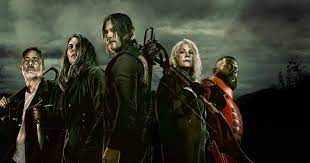

İLKAY KESİCİ
Hakkımda
Merhabalar ben İLKAY KESİCİ ! Karadeniz Teknik Üniversitesi Bilgisayar Mühendisliği mezunuyum. Küçüklüğünden beri teknolojiye meraklı biri olarak bu mesleği yapmaktan gurur duyuyorum.
Patika eğitimleri sayesinde hem bilgilerimi pekiştirmek hem de farklı teknolojileri öğrennmeyi hedeflemekteyim.
İlgi Alanlarım
- Film
- Dizi
- Kitap
Sevdiğim Diziler
The Walking Dead

The Walking Dead (Türkçe: Yürüyen Ölüler), Frank Darabont tarafından geliştirilen bir Amerikan televizyon dizisidir. Hikâyesi, Robert Kirkman, Tony Moore ve Charlie Adlard 'ın aynı adlı çizgi romanına dayanmaktadır. Dizinin başrolünde, geçirdiği bir kaza sonrası girdiği komadan beklenmedik biçimde uyanan ve artık tüm dünyaya George A. Romero'nun korku filmlerindeki zombileri andıran etobur "aylaklar"ın egemen olduğunu keşfeden şerif yardımcısı[2] Rick Grimes rolüyle Andrew Lincoln yer almaktadır. Grimes, bulunduğu hastahaneden ayrılarak, ailesini bulmak için yola koyulur ve yol boyunca, bu yeni dünya düzeninde sağ kalmayı başarabilmiş ve kendisi gibi yaşam savaşı veren diğer birçok kişiyle karşılaşır ve yola onlarla devam ederek, kendi grubunu oluşturur.